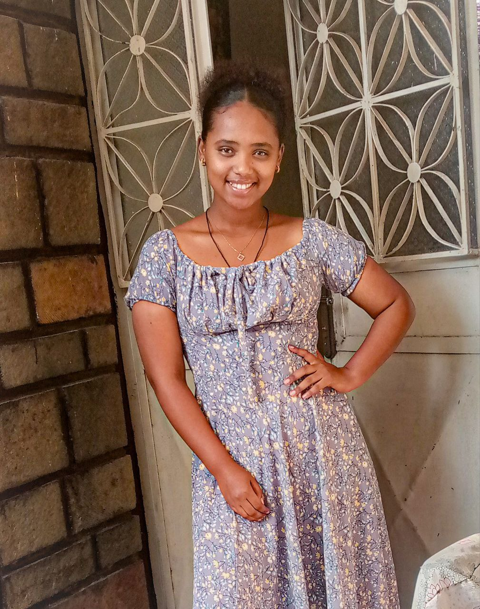

Hello everyone! Am Meron and This is my personal website!
I am from Ethiopia known for her coffee, traditional cloths, and dishes!
Ethiopia is a captivating East African nation with a rich cultural heritage and a diverse landscape. As one of the oldest countries in the world, Ethiopia boasts ancient historical sites, such as the rock-hewn churches of Lalibela and the ruins of the ancient city of Aksum. The country is home to the towering Simien Mountains, the stunning Great Rift Valley, and the serene Lake Tana, the source of the Blue Nile. Ethnically diverse, Ethiopia is known for its vibrant traditions, unique cuisine, and the resilience of its people. Despite facing economic and political challenges in recent years, the country remains a popular tourist destination, drawing visitors with its natural beauty, ancient wonders, and welcoming spirit.
Ethipoian Dishes


Ethipoian cloths


Ethipoian coffee cermony